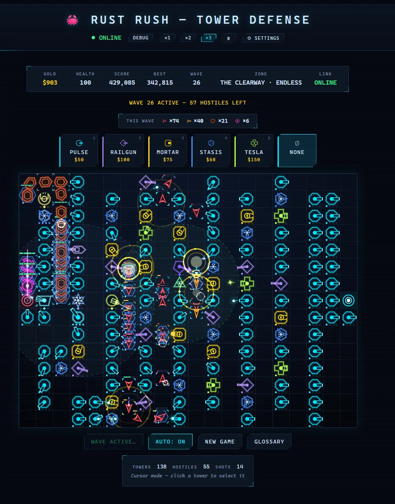
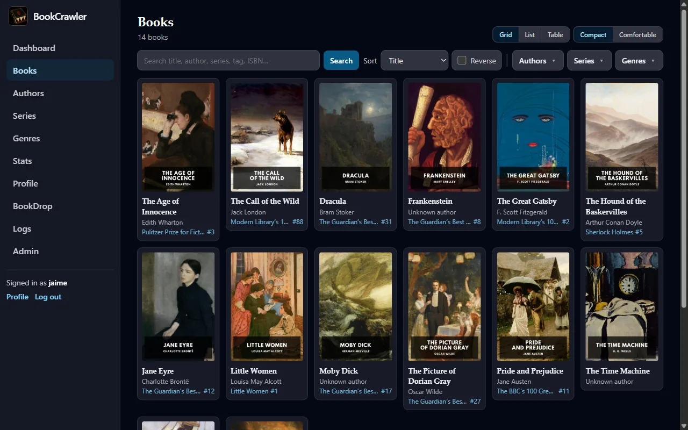

Movie Analytics Dashboard
Full-stack movie discovery platform pulling live TMDB data, with a custom hidden-gems scoring engine.
Live · Python · Flask · PostgreSQL · TMDB API
Things I've built, from games to the homelab that runs them.
Full-stack movie discovery platform pulling live TMDB data, with a custom hidden-gems scoring engine.
Live · Python · Flask · PostgreSQL · TMDB API

Real-time browser tower defense with a server-authoritative Go backend running at 60 FPS.
Live · Go · React · WebSockets · SQLite
A home server running 60-plus containers behind a reverse proxy and tunnel, no ports exposed.
Live · Unraid · Docker · Caddy · Cloudflare Tunnel
1,700-plus movies and 160-plus shows, each added with about thirty seconds of work.
Live · Deluge · Prowlarr · Radarr · Sonarr · rclone

The ebook library manager I wrote to replace CWA, with metadata written back into the files.
Live · Python · FastAPI · PostgreSQL · HTMX
An ebook pipeline where finding the book is the only manual step.
Retired · Calibre-Web Automated · Kindle